전기산업기사 (2008-03-02 기출문제)
1과목: 전기자기학
1. 두 자성체 경계면에서 정자계가 만족하는 것은?
- 양측 경계면상의 두 점간의 자위차가 같다.
- 자속은 투자율이 작은 자성체에 모인다.
- 자계의 법선성분이 같다.
- 자속밀도의 접선성분이 같다.
(정답률: 76%)

2. 100[KW]의 전력이 안테나에서 사방으로 균일하게 방사될 때 안테나에서 1[Km]의 거리에 있는 전계의 실효값은 약 몇[V/m]인가?
- 1.73
- 2.45
- 3.68
- 6.21
(정답률: 68%)
3. 시변 전자파에 대한 설명 중 옳지 않은 것은?
- 전자파는 전계와 자계가 동시에 존재한다.
- 횡전자파(transverse electromagnetic wave)에서는 전파의 진행 방향으로 전계와 자계가 존재한다.
- 포인팅 벡터의 방향은 전자파의 진행 방향과 같다.
- 수직편파는 대지에 대해서 전계가 수직면에 있는 전자파이다.
(정답률: 62%)
4. 자계에 있어서의 자화의 세기 J[Wb/m2]는 유전체에서의 무엇과 동일한 의미를 가지고 대응 되는가?
- 전속밀도
- 전계의 세기
- 전기분극도
- 전위
(정답률: 46%)
5. 철심이 도선을 250회 감고 1.2[A]의 전류를 흘렸더니 1.5 ×10-3[Wb]의 자속이 생겼다. 자기저항은 몇 [AT/Wb]인가?
- 2×105
- 3×105
- 4×105
- 5×105
(정답률: 70%)
6. 유전율이 서로 다른 두 종류의 경계면에 전속과 전기력선이 수직으로 도달할 때 다음 설명 중 옳지 않은 것은?
- 전계의 세기는 연속이다.
- 전속밀도는 불변이다.
- 전속과 전기력선은 굴절하지 않는다.
- 전속선은 유전율이 큰 유전체 중으로 모이려는 성질이 있다.
(정답률: 52%)
7. 평행판 콘덴서의 양극판 면적을 3배로 하고 간격을 1/3로 하면 정전용량은 처음의 몇 배가 되는가?
- 1
- 3
- 6
- 9
(정답률: 76%)
8. 코일을 지나는 자속이 cos ωt 에 따라 변화할 때 코일에 유도되는 유도 기전력의 최대치는 주파수와 어떤 관계가 있는가?
- 주파수에 반비례
- 주파수에 비례
- 주파수 제곱에 반비례
- 주파수 제곱에 비례
(정답률: 64%)
9. 평행판 전극의 단위 면적당 정전용량이 C=200[pF]일 때 두 극판사이에 전위차 2000[V]를 가하 면 이 전극판 사이의 전계의 세기는 약 몇 [V/m]인가?
- 22.6×103
- 45.2×103
- 22.6×105
- 45.2×105
(정답률: 38%)
10. 회로가 닫혀있는 코일 1과 개방된 코일 2가 그림과 같이 평등자계와 직각방향으로 서로 나란한 코일 면을 유지하고 있을 때 평등자계의 자속이 일정한 비율로 감소하는 경우 다음 설명 중 옳은 것은?
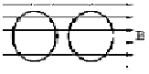
- 유기기전력은 두 코일에 모두 유기된다.
- 유기기전력은 개방된 코일 2에만 유기된다.
- 두 코일에 같은 줄열이 발생한다.
- 줄열은 어느 쪽도 발생하지 않는다.
(정답률: 70%)
11. 점전하 +2Q[C]이 x=0, y=1의 점에 놓여 있고, -Q[C]의 전하가 x=0, y=-1의 점에 위치 할 때 전계의 세기가 0이 되는 점은?
- +2Q 쪽으로 5.83(x=0, y=5.83)
- +2Q 쪽으로 0.17(x=0, y=0.17)
- -Q 쪽으로 5.83(x=0, y=-5.83)
- -Q 쪽으로 0.17(x=0, y=-0.17)
(정답률: 55%)
12. 전류의 세기가 I[A], 반지름 r[m]의 원형 선전류 중심에 m[Wb]인 가상 점자극을 둘 때 원형 선전류가 받는 힘은 몇 [N]인가?
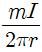
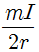
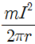
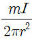
(정답률: 54%)
13. 자속 ø[Wb]가 주파수 f[hz]로
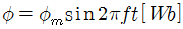
일 때, 이 자속과 쇄교하는 권수 N회인 코일에 발생하는 기전력은 몇 [V]인가?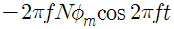
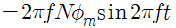
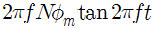
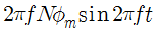
(정답률: 58%)
14. 한 금속에서 전류의 흐름으로 인한 온도 구배부분의 줄열 이외의 발열 또는 흡열에 관한 현상은?
- 펠티에 효과(Peltier effect)
- 볼타 법칙(Volta law)
- 제어벡 효과(Seebeck effect)
- 톰슨 효과(Thomson effect)
(정답률: 70%)
15. 공기의 절연내력을 3[KV/mm]라고 하면 직경 1[cm]의 도체구에 걸리는 최대 전압은 몇 [KV]인가?
- 15 [KV]
- 30[KV]
- 15 [MV]
- 30[MV]
(정답률: 38%)
16. 어느 철심에 도선을 25회 감고 여기에 1[A]의 전류를 흘릴 때 0.01[Wb]의 자속이 발생하였다. 자기 인덕턴스를 1[H]로 하려면 도선의 권수는 얼마로 해야 하는가?
- 25
- 50
- 75
- 100
(정답률: 29%)
17. 두 유전체 ①, ②가 유전율
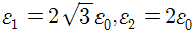
이며, 경계를 이루고 있을 때 그림과 같이 전계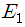
이 입사하여 굴절하였다면 유전체 ② 내의 전계의 세기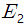
는 몇 [V/m] 인가?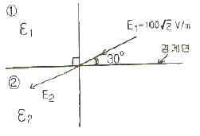
- 95
- 100
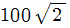
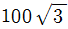
(정답률: 56%)
18. z 축상에 있는 무한히 긴 균일 선전하로 부터 2[m]거리에 있는 점의 전계의 세기가 1.8×104V/m일 때의 선전하 밀도는 몇 [μC/m]인가?
- 2
- 2×10-6
- 20
- 2×106
(정답률: 33%)
19. 500[AT/m]의 자계 중에 어떤 자극을 놓았을 때 3×103[N]의 힘이 작용했다면 이때의 자극의 세기는 몇 [Wb]인가?
- 2
- 3
- 5
- 6
(정답률: 71%)
20. 동심구형 콘덴서의 내외 반지름을 각각 5배로 증가시키면 정전용량은 몇 배가 되는가?
- 2 배
- 루트 2배
- 5 배
- 루트 5배
(정답률: 64%)
2과목: 전력공학
21. 송전 계통에서 1선 지락 고장시 인접 통신선의 유도 장해가 가장 큰 중성점 접지 방식은?
- 비접지
- 소호리액터 접지
- 직접 접지
- 고저항 접지
(정답률: 60%)
22. 다음 중 원자로에서 독작용을 설명한 것으로 가장 알맞은 것은?
- 열중성자가 독성을 받는 것을 말한다.
- 54Xe135 와 62 Sn149가 인체에 독성을 주는 작용이다.
- 열중성자 이용률이 저하되고 반응도가 감소되는 작용을 말한다.
- 방사성 물질이 생체에 유해작용을 하는 것을 말한다.
(정답률: 67%)
23. 전압이 정정값 이하로 되었을 때 동작하는 것으로서 단락고장검출 등에 사용되는 계전기는?
- 접지 계전기
- 부족전압 계전기
- 역전력 계전기
- 과전압 계전기
(정답률: 76%)
24. 애자가 갖추어야 할 구비 조건으로 옳은 것은?
- 온도의 급변에 잘 견디고 습기도 잘 흡수해야 한다.
- 지지물에 전선을 지지할 수 있는 충분한 기계적 강도를 갖추어야 한다.
- 비, 눈, 안개 등에 대해서도 충분한 절연저항을 가지며 누설전류가 많아야 한다.
- 선로전압에는 충분한 절연내력을 가지며, 이상전압에는 절연내력이 매우 적어야 한다.
(정답률: 67%)
25. 송전선에 댐퍼(damper)를 다는 목적은?
- 전선의 진동방지
- 전자유도 감소
- 코로나의 방지
- 현수애자의 경사 방지
(정답률: 76%)
26. 공통 중성선 다중접지방식인 22.9[kV]계통에 있어서 사고가 생기면 정전이 되지 않도록 선로 도중이나 분기선에 보호 장치를 설치하여 상호 보호 협조로 사고 구간만을 제거할 수 있도록 각 종 개폐기의 설치순서를 옳게 나열한 것은?
- 변전소 차단기 → 섹셔너라이저 → 리클로저 → 라인퓨즈
- 변전소 차단기 → 리클로저 → 라인퓨즈 → 섹셔너라이저
- 변전소 차단기 → 섹서너라이저 → 라인퓨즈 → 리클로저
- 변전소 차단기 → 리클로저 → 섹셔너라이저 → 라인퓨즈
(정답률: 55%)
27. 송전선로의 안정도 향상 대책으로 옳지 않은 것은?
- 고속도 재폐로 방식을 채용한다.
- 계통의 전달 리액턴스를 증가시킨다.
- 중간조상방식을 채용한다.
- 조속기의 작동을 빠르게 한다.
(정답률: 73%)
28. 원자로 내에서 발생한 열에너지를 외부로 끄집어내기 위한 열매체를 무엇이라고 하는가?
- 반사체
- 감속재
- 냉각재
- 제어봉
(정답률: 67%)
29. 송전선로에서 복도체를 사용하는 주된 이유는?
- 많은 전력을 보내기 위하여
- 코로나 발생을 억제하기 위하여
- 전력손실을 적게하기 위하여
- 선로정수를 평형시키기 위하여
(정답률: 72%)
30. 다음 중 송전선의 1선 지락 시 선로에 흐르는 전류를 바르게 나타낸 것은?
- 영상전류만 흐른다.
- 영상전류 및 정상 전류만 흐른다.
- 영상전류 및 역상전류만 흐른다.
- 영상전류, 정상전류 및 역상전류가 흐른다.
(정답률: 65%)
31. 3상 3선식 가공 송전선로가 있다. 전선 한 가닥의 저항은 15[Ω] , 리액턴스는 20[Ω] 이고, 부하전류는 100[A], 부하역률은 0.8로 지상이다. 이 때 선로의 전압강하는 약 몇 [V] 인가?
- 2400
- 4157
- 6062
- 1⑤00
(정답률: 59%)
32. 차단기의 정격차단 시간은?
- 고장발생부터 소호까지의 시간
- 가동접촉자 시동부터 소호까지의 시간
- 트립 코일 여자부터 가동접촉자 시동까지의 시간
- 트립 코일 여자부터 소호까지의 시간
(정답률: 60%)
33. 동일 송전선로에 있어서 1선 지락의 경우, 지락 전류가 가장 적은 중성점 접지방식은?
- 비접지방식
- 직접 접지방식
- 저항 접지방식
- 소호리액터 접지방식
(정답률: 59%)
34. 전력용 콘덴서에서 방전코일의 역할은?
- 잔류전하의 방전
- 고조파의 억제
- 역률의 개선
- 콘덴서의 수명 연장
(정답률: 67%)
35. 변전소의 역할에 대한 설명으로 옳지 않은 것은?
- 유효전력과 무효전력을 제어한다.
- 전력을 발생하고 분배한다.
- 전압을 승압 또는 강압한다.
- 전력조류를 제어한다.
(정답률: 58%)
36. 피뢰기의 구비조건으로 옳지 않은 것은?
- 충격방전 개시 전압이 낮을 것
- 상용 주파 방전 개시 전압이 높을 것
- 방전 내량이 작으면서 제한 전압이 높을 것
- 속류 차단 능력이 충분할 것
(정답률: 53%)
37. 출력 20[KW]의 전동기로서 총양정 10[m] 펌프 효율 0.75일 때 양수량은 몇[m3/min]인가?
- 9.18
- 9.85
- 10.31
- 11.0
(정답률: 53%)
38. 부하역률이 cosø인 배전선로의 저항 손실은 같은 크기의 부하전력에서 역률 1일 때의 저항손실과 비교하면?(단, 역률 1일 때의 저항손실을 1로 한다.)
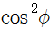
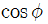
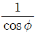
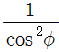
(정답률: 56%)
39. 고압 가공 배전선로에서 고장, 또는 보수 점검시, 정전 구간을 축소하기 위하여 사용되는 것은?
- 구분 개폐기
- 컷아웃 스위치
- 캐치홀더
- 공기 차단기
(정답률: 52%)
40. 흡출관이 필요없는 수차는?
- 프로펠러 수차
- 카플란 수차
- 프란시스 수차
- 펠턴 수차
(정답률: 55%)
3과목: 전기기기
41. 다음 중 변압기유가 갖추어야 할 조건으로 옳은 것은?
- 절연내력이 낮을 것
- 인화점이 높을 것
- 유동성이 풍부하고 비열이 적어 냉각효과가 작을 것
- 응고점이 높을 것
(정답률: 66%)
42. 시라게 전동기의 특성과 가장 가까운 전동기는?
- 반발 전동기
- 동기 전동기
- 직권 전동기
- 분권 전동기
(정답률: 43%)
43. 직류 분권 전동기의 운전 중 계자저항기의 저항을 증가하면 속도는 어떻게 되는가?
- 변하지 않는다.
- 증가한다.
- 감소한다.
- 정지한다.
(정답률: 64%)
44. 2개의 사이리스터로 단상전파정류를 하여 90[V]의 직류 전압을 얻는데 필요한 최대 첨두 역전압[V]은 약 얼마인가?
- 141
- 283
- 365
- 400
(정답률: 57%)
45. 25[KW],125[V],1200[rpm]의 타여자 발전기가 있다. 전기자 저항(브러시포함)은 0.04[Ω]이다. 정격상태에서 운전하고 있을 때 속도를 200[rpm]으로 늦추었을 경우 부하전류[A]는 어떻게 변화하는가?(단, 전기자 반작용은 무시하고 전기자 회로 및 부하저항 값은 변하지 않는다고 한다.)
- 21.8
- 33.3
- 1,200
- 2,125
(정답률: 52%)
46. 직류 분권 전동기의 공급 전압의 극성을 반대로 하면 회전 방향은 어떻게 되는가?
- 변하지 않는다.
- 반대로 된다.
- 발전기로 된다.
- 회전하지 않는다.
(정답률: 65%)
47. 유도전동기의 슬립 s 의 범위는?
- s < -1
- -1 < s < 0
- 0 < s < 1
- 1 < s
(정답률: 74%)
48. 변압기의 내부 고장 보호에 쓰이는 계전기는?
- 차동계전기
- OCR
- 역상계전기
- 접지계전기
(정답률: 69%)
49. 동기 전동기에서 난조를 방지하기 위하여 자극면에 설치하는 권선은?
- 제동권선
- 계자권선
- 전기자권선
- 보상권선
(정답률: 59%)
50. 부하에 관계없이 변압기에 흐르는 전류로서 자속만을 만드는 것은?
- 1차 전류
- 철손 전류
- 여자 전류
- 자화 전류
(정답률: 67%)
51. 유도전동기의 제동법이 아닌 것은?
- 회생 제동
- 발전 제동
- 역전 제동
- 3상 제동
(정답률: 61%)
52. 단상 직권 정류자 전동기는 그 전기자 권선의 권선수를 계자 권수에 비해서 특히 많게 하고 있는 이유를 설명한 것으로 옳지 않은 것은?
- 주 자속을 작게 하고 토크를 증가하기 위하여
- 속도 기전력을 크게 하기 위하여
- 변압기 기전력을 크게 하기 위하여
- 역률 저하를 방지하기 위하여
(정답률: 43%)
53. 단상 변압기 2대를 사용하여 3상 전원에서 2상 전압을 얻고자 할 때 가장 적합한 결선은?
- 스코트결선
- 대각결선
- 2중3각결선
- 포크결선
(정답률: 71%)
54. 단상변압기에서 1차 전압은 3300[V]이고, 1차측 무부하 전류는 0.09[A], 철손은 115[W]이다. 이때 자화 전류[A]는 약 얼마인가?
- 0.072
- 0.083
- 0.83
- 0.93
(정답률: 52%)
55. 3상 동기발전기의 단락비를 산출하는데 필요한 시험은?
- 외부특성시험과 3상 단락시험
- 돌발단락시험과 부하시험
- 무부하 포화시험과 3상 단락시험
- 대칭분의 리액턴스 측정시험
(정답률: 75%)
56. 그림의 단상 전파정류회로에서 교류측 공급전압 628 sin 314t , 직류측 부하저항 20[Ω]일 때의 직류측 부하전류의 평균치
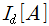
및 직류측 부하전압의 평균치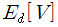
는?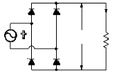
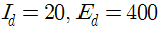
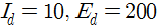
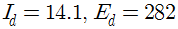
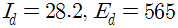
(정답률: 50%)
57. 다음 정류 방식 중 맥동률이 가장 작은 방식은?
- 단상 반파 정류
- 단상 전파 정류
- 3상 반파 정류
- 3상 전파 정류
(정답률: 59%)
58. 어떤 정류기의 부하 전압이 2000[V]이고 맥동률이 3[%]이면 교류분은 몇 [V]포함되어 있는가?
- 20
- 30
- 60
- 70
(정답률: 67%)
59. 정격속도로 회전하고 있는 분권 발전기가 있다. 단자전압 100[V], 계자권선의 저항은 50[Ω], 계자 전류 2[A], 부하전류 50[A], 전기자저항 0.1[Ω]이다. 이 때 발전기의 유기 기전력은 몇 [V]인가?(단, 전기자 반작용은 무시한다.)
- 100.2
- 104.8
- 1⑤.2
- 125.4
(정답률: 56%)
60. 3상 6극 슬롯수 54의 동기 발전기가 있다. 어떤 전기자 코일의 두 변이 제1슬롯과 제8슬롯에 들어 있다면 기본파에 대한 단절권 계수는 얼마인가?
- 0.6983
- 0.7848
- 0.8749
- 0.9397
(정답률: 50%)
4과목: 회로이론
61. 전달함수
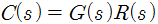
에서 입력함수를 단위 임펄스 즉,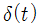
로 가할 때 계의 응답은?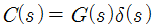
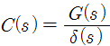
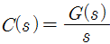
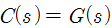
(정답률: 58%)
62. 그림과 같은 회로에서 t=0인 순간에 스위치 S를 닫았다. 이 순간에 인덕턴스 L 에 걸리는 전압은?(단,L의 초기 전류는 0이다.)
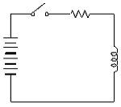
- 0
- E
- LE/R
- E/R
(정답률: 57%)
63. R[Ω]의 3개의 저항을 전압 E[V]의 3상 교류 선간에 그림과 같이 접속할 때 선전류 [A]는 얼마인가?
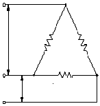
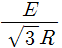
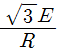
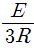
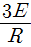
(정답률: 62%)
64. 그림과 같은 2단자 망에서 구동점 임피던스를 구하면?
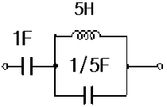
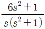
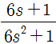
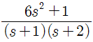
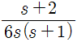
(정답률: 43%)
65. 그림과 같은 캠벨브리지(Campbell bridge)회로에 있어서
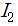
가 0이 되기 위한 C 의 값은?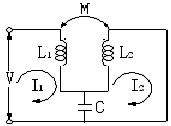
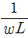
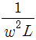
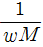
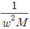
(정답률: 39%)
66. 그림과 R-L-C 직렬회로에서 입력을 전압eit 출력을 전류 i(t)로 할 때 이 계의 전달함수는?(단, R=10, L=1, C=0.1)
(정답률: 47%)
67. 어떤 교류회로에 의 전압을 가할 때 회로에 흐르는 전류가 라 한다. 이 회로에서 소비되는 전력 [W]은?
- 4,254
- 3,256
- 2,267
- 1,767
(정답률: 47%)
68. 대칭 3상 Y결선 부하에서 1상 당의 부하 임피던스가 Z = 16 + j12[Ω] 이다. 부하전류가 10[A]일 때 이 부하의 선간전압은 약 몇 [V]인가?
- 200
- 245
- 346
- 375
(정답률: 62%)
69. 그림과 같은 L형 회로의 4단자 ABCD 정수 중 A는?
(정답률: 54%)
70. 단자전압의 각 대칭분 V0, V0, V0 가 0이 아니고 같게 되는 고장의 전류는?
- 1선지락
- 선간단락
- 2선지락
- 3선단락
(정답률: 49%)
71. 의 역 Laplace 변환을 구하면 어떻게 되는가?
(정답률: 52%)
72. 파형이 반파 정류파일 때 파고율은?
- 1.0
- 1.57
- 1.73
- 2.0
(정답률: 47%)
73. 정현파 교류 를 복소수의 극좌표 형식으로 표시하면?
(정답률: 69%)
74. 를 라플라스 변환하면?
(정답률: 49%)
75. 그림과 같은 이상변압기에 대하여 성립되지 아니하는 관계식은? (단, n1, n2 는 1차 및 2차 코일의 권수, n은 권수비 : n = n1/n2)
(정답률: 50%)
76. 리액턴스 2단자 회로망의 임피던스 함수 Z(jw)=jX(w)라 놓을 때 는 어떻게 되는가?
(정답률: 36%)
77. R-L 직렬회로에서 스위치 S를 닫아 직류전압 E[V]를 회로 양단에 급히 가한 후L/R (초) 후의 전류 I[A] 값은?
(정답률: 52%)
78. 다음 회로에서 부하RL에 최대 전력이 공급될 때의 전력 값이 5[W]라고 할 때 RL + Ri 의 값은 몇 [Ω] 인가? (단,Ri는 전원의 내부저항이다.)(문제 복원 오류로 그림이 없습니다. 정답은 2번입니다. 여기서는 2번을 누르면 정답 처리 됩니다.)
- 5
- 10
- 15
- 20
(정답률: 63%)
79. 그림과 같은 회로에서 선형저항 3[Ω] 양단의 전압은 몇 [V]인가?
- 4.5
- 3
- 2.5
- 2
(정답률: 52%)
80. 그림과 같은 톱니파형의 실효값은?
- A/루트3
- A/루트2
- A/3
- A/2
(정답률: 58%)
5과목: 전기설비기술기준 및 판단 기준
81. 지선을 사용하여 그 강도를 분담시켜서는 아니되는 가공전선로의 지지물은?
- 목주
- 철주
- 철근 콘크리트주
- 철탑
(정답률: 65%)
82. 지중전선로를 직접매설식에 의하여 시설하는 경우에는 그 매설깊이를 차량 기타 중량물의 압력을 받을 우려가 없는 장소에서는 몇 [cm]이상으로 하면 되는가?(오류 신고가 접수된 문제입니다. 반드시 정답과 해설을 확인하시기 바랍니다.)
- 40
- 60
- 80
- 120
(정답률: 58%)
83. 다음 중 옥내에 시설하는 저압전선으로 나전선을 사용하여서는 아니 되는 경우는?
- 애자 사용공사에 의하여 전개된 곳에 시설하는 전기로용 전선
- 이동 기중기에 전기를 공급하기 위하여 사용하는 접촉 전선
- 합성 수지몰드공사에 의하여 시설하는 경우
- 버스 덕트 공사에 의하여 시설하는 경우
(정답률: 40%)
84. 다음 중 저압 접촉전선을 절연 트롤리 공사에 의하여 시설하는 경우에 대한 기준으로 옳지 않은 것은? (단, 기계기구에 시설하는 경우가 아닌 것으로 한다.)
- 절연 트롤리선은 사람이 쉽게 접할 우려가 없도록 설할 것
- 절연 트롤리선의 개구부는 아래 또는 옆으로 항하여 시설할 것
- 절연 트롤리선의 끝 부분은 충전부분의 노출되는 구조일 것
- 절연 트롤리선은 각 지지점에서 견고하게 시설하는 것 이외에 그 양쪽 끝을 내장 인류장치에 의하여 견고하게 시설 할 것
(정답률: 66%)
85. 진열장 안의 사용전압이 400[V] 미만인 저압 옥내배선으로 외부에서 보기 쉬운 곳에 한하여 시설 할 수 있는 전선은? (단, 진열장은 건조한 곳에 시설하고 또한 진열장 내부를 건조한 상태로 사용하는 경우이다.)
- 단면적이 0.75[mm2] 이상인 나전선 또는 캡타이어 케이블
- 단면적이 1.25[mm2] 이상인 코드 또는 절연전선
- 단면적이 0.75[mm2] 이상인 코드 또는 캡타이어 케이블
- 단면적이 1.25[mm2] 이상인 나전선 또는 다심형전선
(정답률: 64%)
86. 다음 중 전로의 중성점 접지의 목적으로 거리가 먼 것은?
- 대지전압의 저하
- 이상전압의 억제
- 손실전력의 감소
- 보호장치의 확실한 동작의 확보
(정답률: 49%)
87. 고압 가공전선이 가공약전류 전선 등과 접근하는 경우는 고압 가공전선과 가공약전류 전선 등 사이의 이격거리는 몇 [cm]이 이상 이어야 하는가? (단, 전선이 케이블인 경우)
- 15
- 30
- 40
- 80
(정답률: 48%)
88. 다음 중 파이프라인 등에 발열선을 시설하는 기준에 대한 설명으로 옳지 않은 것은?
- 발연선에 전기를 공급하는 전로의 사용 전압은 저압일 것
- 발연선을 사람이 접촉할 우려가 없고 또한 손상을 받을 우려가 없도록 시설할 것
- 발열선은 그 온도가 피 가열 액체에 발화 온도의 90[%]를 넘지 않도록 시설할 것
- 발연선 또는 발연선에 직접 접속하는 전선의 피복에 사용하는금속체⋅파이프라인 등에는 사용전압이400[V] 미만인 것에는 제3종 접지공사를 할 것
(정답률: 64%)
89. 저압전로를 절연변압기로 결합하여 특별고압 가공전선로의 철탑 최상부에 설치한 항공 장해등에 이르는 저압전로가 있다. 이 절연변압기의 부하측 1단자 또는 중성점에는 제 몇 종 접지공사를 하여야 하는가?(관련 규정 개정전 문제로 여기서는 기존 정답인 1번을 누르면 정답 처리됩니다. 자세한 내용은 해설을 참고하세요.)
- 제1종 접지공사
- 제2종 접지공사
- 제3종 접지공사
- 특별 제3종 접지공사
(정답률: 46%)
90. 가공전선로의 지지물에 시설하는 통신선 또는 이에 직접 접속하는 가공 통신선의 높이는 철도 또는 궤도를 횡단하는 경우에는 레일면상 몇 [m]이상으로 하여야 하는가?
- 3.5
- 4.5
- 5.5
- 6.5
(정답률: 66%)
91. 유도장해를 방지하기 위하여 사용전압 60000[V] 이하인 가공 전선로의 유도전류는 전화선로의 길이 12[Km] 미다 몇 [μA] 를 넘지 않도록 하여야 하는가?
- 1
- 2
- 3
- 4
(정답률: 56%)
92. 다음 ( ) 안에 알맞은 것은?
- 2.0
- 1.6
- 1.2
- 1.0
(정답률: 42%)
93. 저압전로에서 그 전로에 지락이 생긴 경우에 0.5초 이내에 자동적으로 전로를 차단하는 장치를 시설하는 경우, 자동차단기의 정격감도전류가 200[mA]이면 특별 제3종 접지공사의 접지 저항값은 몇 [Ω] 이하로 하여야 하는가? (단, 물기가 있는 장소인 경우이다.)
- 50
- 75
- 100
- 300
(정답률: 47%)
94. 전기설비기술기준상 전력계통의 운용에 관한 지시 및 급전조작을 하는 곳으로 정의되는 것은?
- 상황실
- 급전소
- 발전소
- 지령실
(정답률: 71%)
95. 제1종 접지공사의 접지선은 인장강도 1.04[KN] 이상의 금속선 또는 지름이 몇 [mm] 이상의 연동선 이어야 하는가?(문제 오류 또는 관련 규정이 개정되어 정답이 없는것 같습니다. 여기서는 기존정답인 3번을 누르면 정답 처리 됩니다. 자세한 내용은 해설을 참고하세요.)
- 1.6
- 2.0
- 2.6
- 3.2
(정답률: 60%)
96. 금속제 외함을 가진 저압의 기계 기구로서 사람이 쉽게 접촉할 우려가 있는 곳에 시설하는 경우 전로에 지락이 생겼을때 사용 전압이 최소 몇 [V]를 초과하는 경우를 자동적으로 전로를 차단하는 장치를 시설하여야 하는가?(오류 신고가 접수된 문제입니다. 반드시 정답과 해설을 확인하시기 바랍니다.)
- 40
- 60
- 90
- 120
(정답률: 63%)
97. 갑종 풍압하중을 계산할 때 강관에 의하여 구성된 철탑에서 구성재의 수직투영면적 1[m2]에 대한 풍압하중은 몇 [Pa]를 기초로 하여 계산한 것인가? (단, 단주는 제외한다.)
- 588
- 1117
- 1255
- 2157
(정답률: 39%)
98. 터널 등에 시설하는 사용전압이 220[V]인 전압의 전구선으로 방습 코드를 사용하는 경우 단면적은 몇 [mm2] 이상 이어야 하는가?
- 0.5
- 0.75
- 1.0
- 1.25
(정답률: 52%)
99. 특별고압 가공전선이 도로 등과 교차하여 도로 상부측에 시설할 경우에 보호망도 같이 시설하려고 한다. 보호망은 제 몇 종 접지공사로 하여야 하는가?(관련 규정 개정전 문제로 여기서는 기존 정답인 1번을 누르면 정답 처리됩니다. 자세한 내용은 해설을 참고하세요.)
- 제1종 접지공사
- 제2종 접지공사
- 제3종 접지공사
- 특별 제3종 접지공사
(정답률: 47%)
100. 다음 중 고압 옥내배선의 시설로서 알맞은 것은?
- 케이블 트레이 공사
- 금속관 공사
- 합성수지관 공사
- 가요전선관 공사
(정답률: 50%)